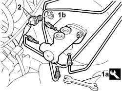
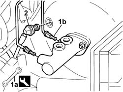
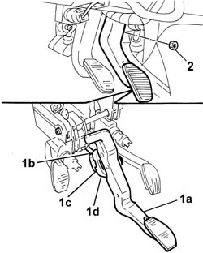
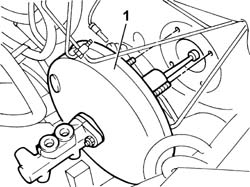

3330D02 brake servo/brake pump assembly - r r
- Path
- Procedures > 33 BRAKES > 3330 HYDRAULIC BRAKE SYSTEM > 3330D brake vacuum system > 3330D02 brake servo/brake pump assembly - r r
- Kind
- repair procedure (removal / refitting; the operation number is the code)
- Applies to
- all engines; all production periods
- Interactive page
- https://sloeber94.github.io/elrnDB-fDbl/en/#/2584666
Applies to: all engines; all production periods
 Removing
Removing
 Refitting
RefittingOpen the bonnet.
Op. 5530B52 BATTERY SUPPORT/DRIP TRAY - R.R..
Applies to: all engines; all production periods; only with equipment: ABS
Op. 3340A12 ABS HYDRAULIC AND ELECTRONIC CONTROL UNIT - R.R..
Op. 3340A13 A.B.S. CONTROL UNIT SUPPORT - R.R..
1. Use wrench (1a) to disconnect brake pipe fittings(1b) from the master cylinder.
 | Name | Country |
|---|---|---|
1a | Box wrench for brake fittings | 1.856.132.000 |
2. Disconnect the vacuum pump pipe from the fitting of the single-acting valve on the brake servo.

Applies to: all engines; all production periods; only with equipment: ABS
1. Use wrench (1a) to disconnect brake pipe fittings(1b) from the master cylinder.
| Name | Country |
|---|---|---|
1a | Box wrench for brake fittings | 1.856.132.000 |
2. Disconnect the vacuum pump pipe from the fitting of the single-acting valve on the brake servo.

Applies to: all engines; all production periods; only with equipment: ABS
1. Working from inside the car, disconnect the brake servo rod from brake pedal (1a) by undoing tabs (1c) of retaining device (1d).
2. Undo the four brake servo retaining nuts (used also to secure the pedal unit).

Applies to: all engines; all production periods; only with equipment: ABS
1. Working from inside the engine bay, remove the brake servo complete with master cylinder. Take care not to damage the brake pipes.

Applies to: all engines; all production periods
Refitting
RemovingWorking from inside the engine bay, refit the brake servo complete with pump in its housing.
Working from inside the car, secure the brake servo to the body by means of nuts. Tighten the nuts to the recommended torque.
 | Fastening | Component | Ø | Value (daNm) |
|---|---|---|---|---|
- | Nut | BRAKE SERVO | M8 | 2.8 |
Connect the brake servo rod to the brake pedal.
Working from inside the engine bay, connect the vacuum intake pipe to the brake servo.
Connect the brake pipe fittings to the master cylinder and tighten by means of the appropriate wrench.
| Name | Country |
|---|---|---|
- | Box wrench for brake fittings | 1.856.132.000 |
| Fastening | Component | Ø | Value (daNm) |
|---|---|---|---|---|
- | Connector | RIGID PIPE TO FRONT BRAKES | M10 x 1 | 1.4 |
Complete op. 3330C30.
Applies to: all engines; all production periods; only with equipment: ABS
Op. 3340A13 A.B.S. CONTROL UNIT SUPPORT - R.R..
Op. 3340A12 ABS HYDRAULIC AND ELECTRONIC CONTROL UNIT - R.R..
Op. 5530B52 BATTERY SUPPORT/DRIP TRAY - R.R..
Op. 0010T64 BRAKE AND/OR CLUTCH FLUID CHECK LEVEL AND TOP UP AS NECESSARY.
Applies to: all engines; all production periods; only with equipment: ABS
Op. 0010T66 EXTRAS FOR VERSIONS WITH ABS FOLLOWING OPERATION 0010T65.
Op. 3330C40 BRAKE FLUID RESERVOIR CAP - R + R.
Close the bonnet lid.
Topics linked from this page (9)
- 0010T64 brake and or clutch fluid check level and top up as necessary
- 0010T65 hydraulic brake system bleed air
- 0010T66 manual gearbox oil check level and top up if necessary
- 3330C30 brake fluid reservoir - r + r and wash inside
- 3330C40 brake fluid reservoir plug - r + r
- 3340A12 A'B.S. system. - electronic and hydraulic CONTROL UNIT R.R.
- 3340A13 abs central mount - r r
- 5530B10 battery - r+r
- 5530B52 Battery DRIP TRAY/SUPPORT - R.R.
Topics that link to this page (7)
- F10 EXCESSIVE BRAKE PEDAL FREE PLAY
- F12 BRAKE PEDAL HARD
- X20 BRAKE FLUID LEAKS
- 3330D10 brake servo - r+r - includes separation from master cylinder (pump)
- 3330D14 brake servo - r+r for versions with abs - includes separation from master cylinder (pump)
- 3330E53 RIGID PIPE from master cylinder to RIGHT front brake - R.R.
- 3340B56 RIGID PIPE from hydraulic CONTROL UNIT to RIGHT FRONT BRAKE - R.R.